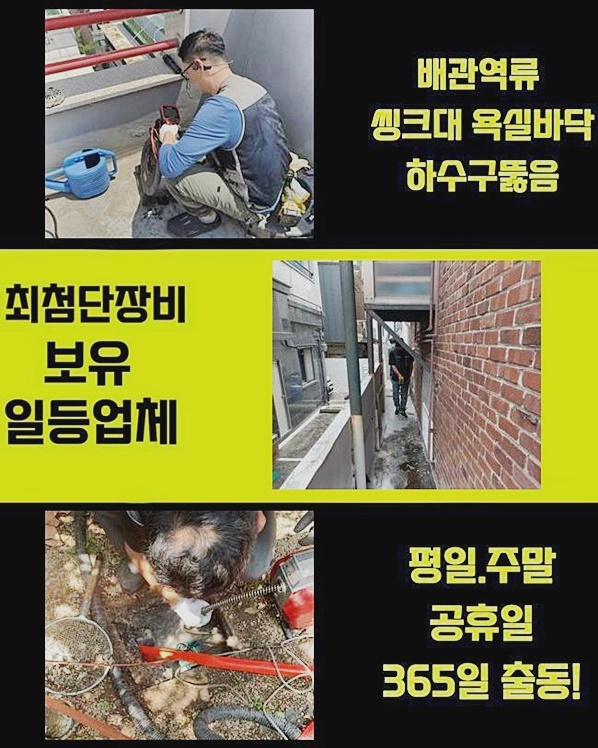
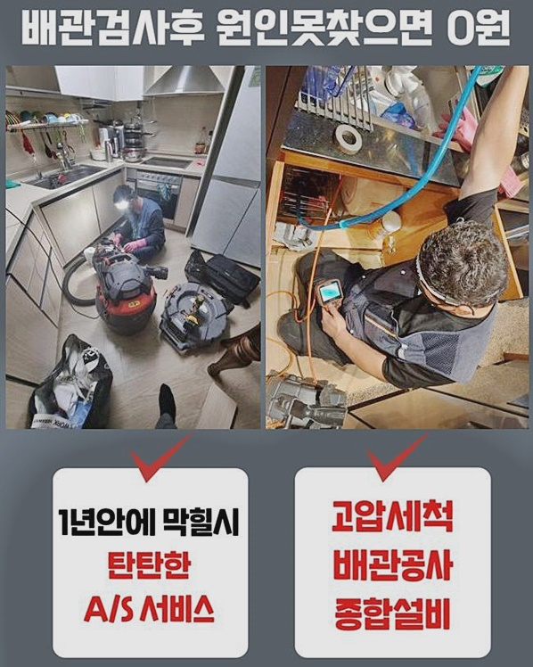
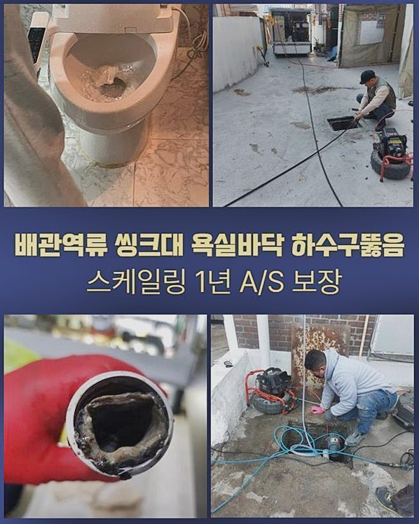
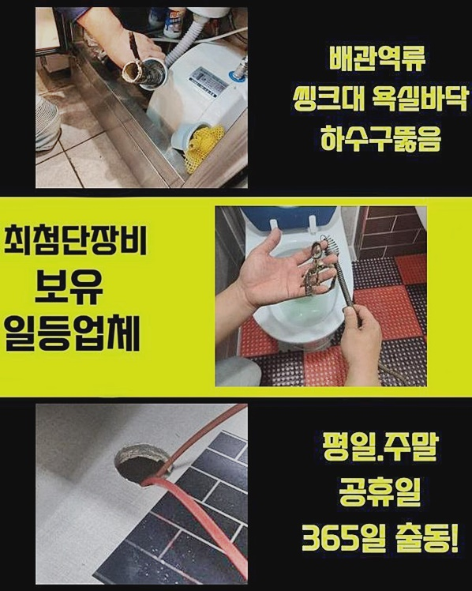
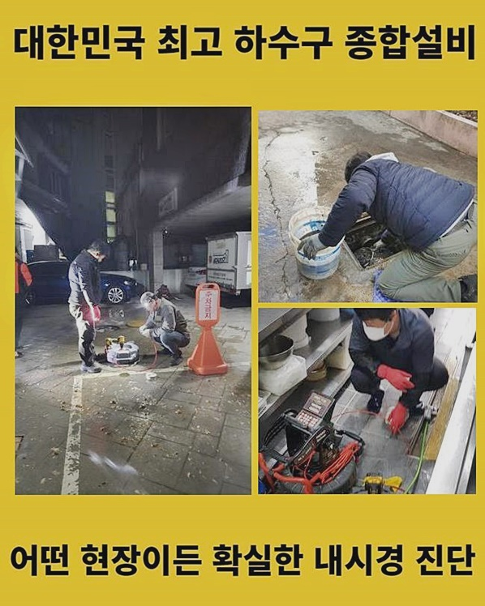
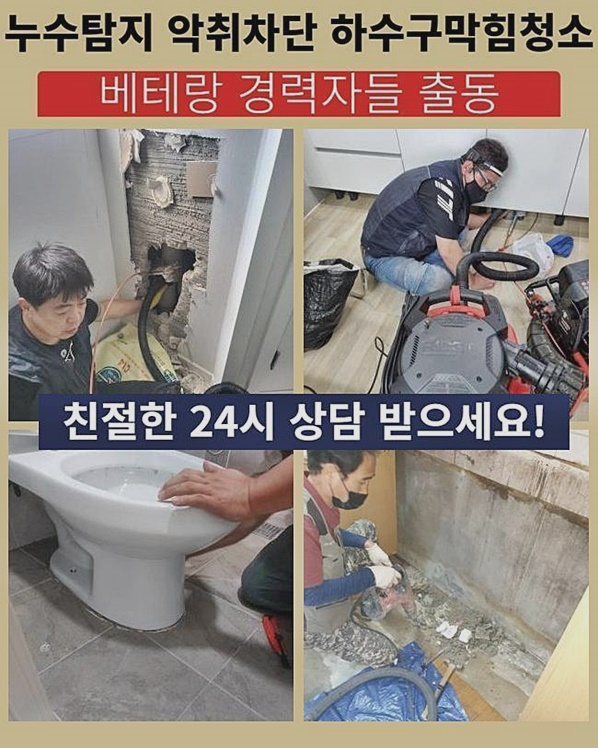

🏠 일산 산황동대변기뚫음 지영동 배수구뚫기 누수공사
용인시 처인구 배관막힘 전문 시공 후기

📋 작업 개요
- 위치: 용인시 처인구, 수원시 영통구, 화성시 동탄
- 서비스 유형: 배관막힘, 누수수리, 고압세척, 내시경점검
- 작업 일시:
- 업체명: 하수구수사대 (010-5615-2118)
🔍 문제 상황
일산 산황동대변기뚫음 지영동 배수구뚫기 누수공사
주목 부탁드립니다 파이프 청소는 간략하게 뚫기만 한다고 해소가 힘겹다고 이야기해 드릴 수 있겠는데요
예측과 달리 까다롭고 불쾌한 광경이 자주 목격되기에 어째서 이런 일이 일어났는지 이유를 명확히 관측하고 온전한 플랜을 짜서 수선에 임하는 것이 일단적으로 과제입니다
일부분의 청소를 속행했더라도 인접 처소에 문제가 생겨 금방 공사를 시행해야 되는 상황도 빈번합니다
그렇기 때문에 일시적인 고장만 처치하는 선에서 마감짓지 말고 모든 처소를 온전하게 조사하여 내측에 존재하는 이물들을 처치해야 추가 문제가 일어나지 않는 거죠
당연히 개인들도 차후 유지보수에 신경써야 합니다
이번에 안내해 드릴 현장은 필로티형 건물로 저희팀의 후기글을 읽어 보시고 조속히 누수를 고쳐달라는 요망하셨기에 출동하였습니다
오물누적과 누수 증상이 왜 같이 일어나느냐 의아할 수도 있겠지만 금번의 소개글을 읽어보시면 왜 그런지에 대해 깨달으실 거에요
윗부분은 주거지이며 최하층은 커피숍 등이 자리잡은 필로티 구조의 건조물이었습니다
맨홀 뚜껑을 열면 오수관과 배수파이프가 붙어 있는데 일부가 물막힘이 생겨나 역류증상이 보였고 최종적으로 중심부의 거주지로 전파되었기 때문에 쉽지 않은 상태였어요
최근에 자주 보이는 스타일이 1층 자리에는 가게가 있고 상부는 원룸 임대 형식으로 활용하는 분들이 꽤 되는데 보는 것과 같이 유지관리와 관련한 결손으로 장애가 일어나는 상황이 자주 있어요

🔎 원인 분석
💡 전문가 진단: 정밀 진단 장비를 사용하여 슬러지의 고착 여부를 판명하고 타격/세척 작업을 실시했습니다.
갑작스런 누수로 주변이 쑥대밭이었고 수습하기 위한 목적으로 빨리 시공에 들어갔어요
먼저 막힘증세 해결을 위해서 오수탱크와 주요 배관을 검진하고 1층부터 꼭대기까지 거주 중인 세대원들께 부탁드려 배관 상태를 전반적으로 살펴봤는데 양호하였어요
그러나 주거하시거나 상가 운영자들에게 면죄부가 주어지는 것은 아니에요
평상시에 무성의하게 잔재들을 처리한 게 내측이 아니고 다른 부분에서 물넘침이 일어난 것입니다
그리하다면 누수문제가 벌어지는 건 어디에서 찾을 수 있을까요? 정답은 이물인데요
하수관이 변쇠하며 균열을 일으키기도 하지만 여기처럼 노폐물들이 누적되면서 배수관이 부풀기도 하고 줄어들기도 하면서 관의 강도가 떨어지고 그런 다음엔 파열이 일어날 수 있어요
최근 들어서 혼자서 거주하시는 분들이 많아 소형 빌라에 사는 경우가 많은데요
그 뒤엔 이와 같은 일로 맘고생 하시는 건물주사람들이 꽤 됩니다
그게 어떠한 상관이 있느냐 의문이 드실 수 있겠습니다만 홀로 거주하는 경우에 신중하게 시설물을 이용하는 경우도 있긴 하지만 무책임하게 이용하는 개인도 상당합니다
화장솜이나 플라스틱 등을 하수구로 내던지거나 양변기로 던져버리는 상황이 많아지고 있답니다
그래서 추가 문제가 점진적으로 증대되고 있답니다
일반 아파트 건물도 해당 고장이 일어날 수는 있지만 거주자들이 다수이며 관리팀이 상주하는 경우가 많아 이런 처소들과 같이 빈삭하게 나타나지는 않아요

🔧 작업 과정
일단 맨홀을 열어서 안의 이물질들을 없앴어요
고압 물청소를 진행하려고 작업차를 최대한도로 근접한 위치로 옮겨 물청소줄을 내부로 삽입하여 찌꺼기를 없앴어요
고온 세정은 80도에 육박하는 수돗물을 쓰고 수압을 올려서 그 힘을 바탕으로 내측의 노폐물들을 소양하는 작업을 뜻합니다
본 장애가 발발한 위치와 같이 다른 부분에서 막힘이나 누수증세가 발현되는 때 활용하는 방식입니다
작업에 쓰이는 고온 액체는 저희 살수차 내부에서 준비되는 것을 사용하므로 세대 내부에서 끌어다 써야 하는 생각은 하실 이유가 없어요
수회 세척을 하며 최종적으로 막힌 기름기와 정체를 일으켰던 주된 이유가 되었던 물휴지를 다 제거했죠
보습 휴지류들은 일반적인 티슈와 다르게 녹아 없어지지 않고 고분자 화합물을 베이스로 생산되었기에 양변기 안에 투입하면 막힘이 생기는 지름길이 되므로 틀림없이 일반휴지통에 별개로 처분해야 해요
그렇게 하지 않는다면 지금처럼 말썽이 생기게 되며 막힘으로 결과적으로 배관 파열이 생기거나 타 지점에도 손해를 주게 되는 거죠
실제 이와 같은 말썽으로 정부에선 매해 세정 계획을 세워 배관업체를 초빙해 지역의 배수관 내측에 거류하는 슬러지를 소거하는 일을 속행하고 있어요
이와 같이 국가적 낭비의 메인 까닭으로 지적되고 있는 상황이므로 필히 신경써서 생활하시길 부탁하며 무책임하게 버리는 일이 반복되면 간단하게 막힘으로 종료되지 않고 세대 내의 파이프가 역류되며 사태가 심각해질 수가 있죠
내시경cctv를 투입하여 빈틈없이 관찰하며 잔여 슬러지가 상존하는지 지켜보았어요
예측대로 추가적인 조치가 필요하지는 않았어요 의뢰인도 이 모습을 보셨고 차후 보존을 잘하셔야 된다고 설명드렸어요
막힘이 일어난 부분에서 또 장애가 생겼다고 토로하시는 분들도 많은데 그것은 꼼꼼하게 배수관을 소제하지 않고 돌아가 버렸기 때문이죠
본 현장처럼 배관 트러블이 발견되면 그곳의 말썽만 잠재우는 선에서 끝내지 말고 전 구간을 뚫는다면 문제가 발생하지 않아요
마땅히 거주하시는 분들도 정결하게 이용해야 하죠
추천해드리는 수단으로는 음식물 쓰레기가 최대한 배수관으로 진입하지 못하도록 장치를 세팅하는 것이 있어요
기초적인 것이긴 하지만 생각 외로 저희가 방문한 세대에서는 해당되는 시설마저 이행하지 않는 경우도 있으셨어요
뚫려 있다는 이유로 책임감 없이 버리신다면 몇달 지나지 않아서 추가 문제가 생겨날 가능성이 있어요
주변 세대에도 해를 주었으니 깨끗하게 처리하였어요


✅ 작업 완료
막힘을 뚫는 부분이 중요하나 추후 수습도 중대하다는 부분을 강조해 드립니다
간소하게 문제만 처리하는 게 아니고 원상 복구도 이행하고 있기에 문의 주시면 조속히 바라시는 모양으로 수리하겠습니다
저희들은 침전물의 유형이나 다른 고장 등에 얽매이지 않고 전화주시면 단박에 방문드리고 있답니다
그렇기에 아무때나 저희들을 원하신다면 의뢰해 주세요
배관 속 침전물은 간단하게 적체되는 것이 아닌 악취를 유발하고 파이프를 약화시키기에 정례적인 점검을 이행하는 것을 추천해 드리며 그 부분이 힘겹다면 일상 중에 고장이 안생기도록 사용하실 것을 권장합니다



⚠️ 하수구 배관 막힘 예방 및 관리 가이드
- ✅ 머리카락, 비닐, 물티슈 등 물에 분해되지 않는 이물질은 절대 흘려보내지 마세요.
- ✅ 기름기 많은 식기는 설거지 전 키친타올로 먼저 기름때를 닦아내세요.
- ✅ 주기적으로 배수구에 뜨거운 물을 가득 부어주어 유지방 고착을 방지하세요.
- ✅ 작업 후 1년 이내 재발 시 무상 A/S 보증 서비스를 제공합니다.
💡 핵심 정리
- 확실한 장비 작업(내시경 점검 및 샤프트 스케일링)으로 원인을 뿌리 뽑습니다.
- 작업 후 1년 이내에 동일한 부위 재발 시 100% 무상 A/S 서비스를 보장합니다.
- 서울 · 경기 · 인천 전 지역에 24시간 언제든 긴급 출동할 수 있도록 항시 대기 중입니다.
❓ 자주 묻는 질문 (FAQ)
🚨 용인시 처인구 배관막힘 문제로 고민이신가요?
정확한 원인 진단과 확실한 시공으로 재발 없는 해결을 약속드립니다.
24시간 긴급 출동 | 서울 · 경기 · 인천 전지역 | 1년 내 재발 시 무상 A/S